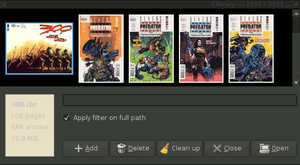
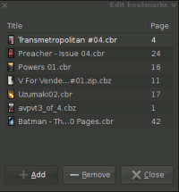

Comix
Dieser Artikel wurde für die folgenden Ubuntu-Versionen getestet:
Ubuntu 16.04 Xenial Xerus
Ubuntu 14.04 Trusty Tahr
Zum Verständnis dieses Artikels sind folgende Seiten hilfreich:
 Comix
Comix  ist eine auf Python und GTK+/PyGTK basierende Anwendung zum Betrachten von Bildarchiven bzw. Comicbuch-Archiven. Das Programm erlaubt es dem Nutzer, eine Bibliothek von Archiven anzulegen, die mit Vorschaubildern und Covern angezeigt wird. Das Programm bietet außerdem eine Lupenfunktion, Farbkorrektur und einfache Lesezeichenverwaltung.
ist eine auf Python und GTK+/PyGTK basierende Anwendung zum Betrachten von Bildarchiven bzw. Comicbuch-Archiven. Das Programm erlaubt es dem Nutzer, eine Bibliothek von Archiven anzulegen, die mit Vorschaubildern und Covern angezeigt wird. Das Programm bietet außerdem eine Lupenfunktion, Farbkorrektur und einfache Lesezeichenverwaltung.
Installation¶
Folgende Pakete müssen bzw. können installiert [1] werden. Für die verschiedenen Archivtypen werden die Routinen der Packprogramme benötigt [2].
comix (universe)
unrar (universe, optional, für .cbr-Dateien )
unzip (universe, optional, für .cbz-Dateien )
tar (universe, optional, für .cbt-Dateien )
 mit apturl
mit apturl
Paketliste zum Kopieren:
sudo apt-get install comix unrar unzip tar
sudo aptitude install comix unrar unzip tar
Nach der Installation kann Comix über ein Anwendungsmenü gestartet werden. Die Verknüpfung dazu findet sich im Applikationsmenü der jeweiligen Umgebung z.B. im "Xfce-Menü -> Grafik -> Comix". Analog dazu lädt man die Anwendung unter GNOME mit "Anwendungen -> Grafik -> Comix". Alternativ dazu kann Comix auch über die Konsole gestartet werden [3]:
comix
Dateitypen¶
Comix ist auf die Betrachtung von so genannten Comicbook Archives (.cbt/.cbr/.cbz) ausgelegt, in denen JPG- oder PNG-Dateien mit durchlaufender Nummerierung komprimiert sind. CBT steht dabei für "Comic Book TAR(ed)" analog dazu CBZ - "Comic Book Zip(ped)" und CBR für "Comic Book RAR(ed)". Für die Benutzung von CBR-Dateien muss eine unrar-Bibliothek installiert sein.
|  |
| Bibliotheksverwaltung |
Verwaltung¶
Über das Tastaturkürzel Strg + L , den Menüeintrag "Datei -> Bibliothek öffnen..." oder einen Rechtsklick und "Bibliothek öffnen..." wird das Verwaltungsfenster geöffnet. Der obere Teil der Bibliothek besteht aus einer Vorschauansicht der archivierten Titel. Diese werden mit dem jeweiligen Cover angezeigt. Als Cover dient jeweils das erste Bild im Archiv.
Im unteren Teil der Bibliothek werden auf der linken Seite Informationen zum gewählten Archiv angezeigt (Dateiname, Seitenzahl, Archivtyp, Dateigröße). Auf der rechten Seite befindet sich ein Textfeld zum Filtern nach Titel und einige Bedienelemente zur Verwaltung der Archive (Hinzufügen, Löschen, Aufräumen, Schließen, Öffnen).
Durch einen Klick auf "Hinzufügen" können im Dateisystem neue Archive gesucht und geladen werden. Mit "Aufräumen" werden Archive aus der Bibliothek entfernt die gelöscht oder verschoben wurden. Mit den anderen Bedienelementen "Löschen" und "Öffnen" lassen sich Archive entfernen oder laden. "Schließen" beendet die Bibliothekenansicht.
Hinweis:
Wenn beim Hinzufügen von neuen Archiven ein Haken bei "Archive rekursiv hinzufügen" gesetzt wird, durchsucht Comix das gewählte Verzeichnis und nimmt alle gefundenen Archive in die Bibliothek auf.
Die von Comix erzeugten Vorschaubilder haben alle das Format .png. Die Cover werden in ~/.comix/library/covers/ abgelegt. Die Vorschaubilder der Bookmarks liegen unter ~/.comix/menu_thumbnails/ oder ~/.thumbnails/normal/ und alle für die Vorschauleiste generierten Bilder landen in /tmp/comix/ und werden am Ende der Sitzung gelöscht. Das Verzeichnis für die Vorschaubilder kann im Menü "Bearbeiten -> Vorschaubilder" angepasst werden.

Lesezeichen¶
| Lesezeichen | |||
| Option | Funktion | Tastenkürzel | |
| Lesezeichen hinzufügen | Setzt ein Lesezeichen auf die aktuelle Seite | Strg + D | |
| Lesezeichen Bearbeiten | Öffnet die Lesezeichenverwaltung | Strg + B | |
Benutzung¶
Seitennavigation¶
Um den Inhalt der Archive zu lesen, wählt man zunächst aus der Bibliothek das gewünschte Archiv aus und bestätigt durch einen Doppelklick oder mit dem "Öffnen"-Knopf. Auf der linken Seite erscheint nun ein scrollbares Menü, in dem alle Seiten des Archivs als Bildvorschau angezeigt werden. Mit einem Linksklick auf die aktuelle Seite wird die nächste Seite geladen. Ein Rechtsklick zeigt ein Menü an, in welchem alle Optionen der Werkzeugleisten aufgelistet sind. Comix legt ein Verzeichnis der zuletzt geöffneten Archive an ("Datei -> Zuletzt geöffnet"), welches allerdings nur auf das Archiv nicht auf einzelne Seiten verweist. Um direkt Seiten anzuspringen gibt man entweder über "Gehe zu" die Seitenzahl an oder legt ein Lesezeichen an.
| Seitenwechsel - Menü "Gehe zu" | |||
| Option | Funktion | Tastenkürzel | |
| Erste Seite | Springt zur ersten Seite des Archivs | Pos1 | |
| Letzte Seite | Springt zur letzten Seite des Archivs | Ende | |
| Gehe zu Seite... | Springt zu einer beliebigen Seite des Archivs | G | |
| Nächste Seite | Zeigt die nächste(n) Seite(n) an | ↓ oder → oder Bild ↓ oder Mausrad runter oder Daumentaste vor | |
| Vorherige Seite | Zeigt die vorherige(n) Seite(n) an | ↑ oder ← oder Bild ↑ oder Mausrad hoch oder Daumentaste zurück | |
Zoom / Darstellung¶
Comix bietet eine Vielzahl an Optionen den Inhalt des Archivs anzeigen zu lassen. Das Menü Ansicht ist in verschiedene Punkte unterteilt:
| Automatischer Zoom - Menü "Ansicht" | |||
| Option | Funktion | Tastenkürzel | |
| Vollbild | Blendet die Werkzeugleisten aus und vergrößert das Fenster auf Vollbild | F | |
| Doppelseitig | Zeigt die aktuelle und die nächste Seite gleichzeitig an | D | |
| Manga-Leserichtung | vertauscht die Reihenfolge der Seiten (nur wichtig für Doppelseite) | M | |
| Seitengröße/-breite/-höhe einpassen | Passt die Seite der Fenstergröße/-breite/-höhe an | S / W / H | |
| Freie Ansicht | Zeigt die Seiten des Archivs mit Benutzereinstellungen an | A | |
| Manueller Zoom - Menü "Ansicht -> Freie Ansicht" | |||
| Option | Funktion | Tastenkürzel | |
| Hineinzoomen/Herauszoomen | Vergrößert oder verkleinert die angezeigte Seite | + / - | |
| Normale Größe | Zeigt die aktuelle Seite in der Originalgröße an | N | |
| Seitenbreite/-höhe einpassen | Passt die aktuelle Seite der Fensterbreite/-höhe an | Strg + W / Strg + H | |
| Komplett einpassen | Passt die aktuelle Seite der Fenstergröße an | B | |
| Transformation - Menü "Ansicht -> Transformieren" | |||
| Option | Funktion | Tastenkürzel | |
| 90° im Uhrzeigersinn | Dreht die Seite um 90° nach rechts | R | |
| 90° gegen den Uhrzeigersinn | Dreht die Seite um 90° nach links | ⇧ + R | |
weitere Optionen¶
| Weitere Optionen | |||
| Option | Funktion | Tastenkürzel | |
| Diaschau | Wechselt im Vollbildmodus automatisch nach einem gegebenen Intervall durch die Seiten | Strg + S | |
| Vorschaubilder | Zeigt die Vorschauleiste an oder blendet sie aus | F9 | |
| Vergrößerungslinse | Vergrößert einen Ausschnitt des Bildes um den Mauszeiger | Z | |
| Alles verstecken | Blendet alle aktiven Leisten aus | I | |
| Farbe anpassen... | Erlaubt Einstellungen wie Helligkeit, Kontrast etc. | J | |
Mit Comix ist es überdies möglich, Archive in andere Formate zu konvertieren ("Datei -> Konvertieren..."), einzelne Bilder aus dem Archiv zu speichern ("Datei -> Bild entpacken") und in Graustufen umwandeln, rotieren oder spiegeln zu lassen ("Datei -> Dateioperationen"). Außerdem können die "Eigenschaften" eines Bildes aufgelistet werden.
Eigene Archive erstellen¶
Um ein eigenes Archiv zu erstellen, müssen von "0-n" nummerierte JPG- oder PNG-Dateien in ein entsprechendes Archiv (z.B. RAR, TAR und ZIP) verpackt werden [2]. Anschließend gibt man dem Archiv einen treffenden Namen und passt die Dateiendung an, so dass Comix das Archiv erkennt. Danach kann das Archiv einfach geladen werden.
Um z.B. ein selbst gescanntes Comicbuch mit Comix lesen zu können, benennt man zunächst alle Dateien in der richtigen Reihenfolge um. Das Cover von z.B. "Batman Ausgabe Nr. 1" nennt man batman1_0.jpg und die folgenden Seiten batman1_1.jpg ... batman1_999.jpg. Es werden nun die fertig nummerierten Dateien in ein Archiv verpackt. Der Dateiname kann mit Dateiendung gleich beim Komprimieren angegeben werden.
Der folgende Befehl packt alle .jpg-Dateien im aktuellen Ordner in ein TAR-Archiv mit dem Namen batman1.cbt:
tar -cvvf batman1.cbt *.jpg
Alternativ alle .jpg-Dateien im aktuellen Ordner in ein RAR-Archiv mit dem Namen batman1.cbr:
rar a batman1.cbr *.jpg
Oder alle .jpg-Dateien im aktuellen Ordner in ein ZIP-Archiv mit dem Namen batman1.cbz:
zip -r batman1.cbz *.jpg
Hinweis:
Bei der Auswahl der Kompressionsmethode kann es eine Rolle spielen, in welcher Umgebung das Archiv benutzt werden soll. Unter Windows sind zum Beispiel die .rar/.tar-Archive erst durch eine zusätzliche (u.U. kostenpflichtige) Installation verfügbar. Wer also seine Archive unter anderen Betriebssystemen benutzen möchte, sollte z.B. für Windows das ZIP-Format verwenden.
Nun verschiebt man das Archiv in ein beliebiges Verzeichnis und fügt es wie unter Verwaltung beschrieben zu seiner Comix-Bibliothek hinzu.
Alternativen¶
Evince - GNOME-Standard-Dokumentbetrachter, zum Betrachten von ZIP und RAR gepackten Archiven geeignet. Archive müssen ggf. die Endung .cbz oder .cbr haben, damit das Öffnen funktioniert.
QComicBook
- ähnlich wie Comix, aber auf Qt-Basis (KDE) zum Betrachten von ZIP, RAR, ACE, TAR.GZ, TAR.BZ2 und 7Z gepackten Archiven geeignet.

- Erstellt mit Inyoka
-
 2004 – 2017 ubuntuusers.de • Einige Rechte vorbehalten
2004 – 2017 ubuntuusers.de • Einige Rechte vorbehalten
Lizenz • Kontakt • Datenschutz • Impressum • Serverstatus -
Serverhousing gespendet von